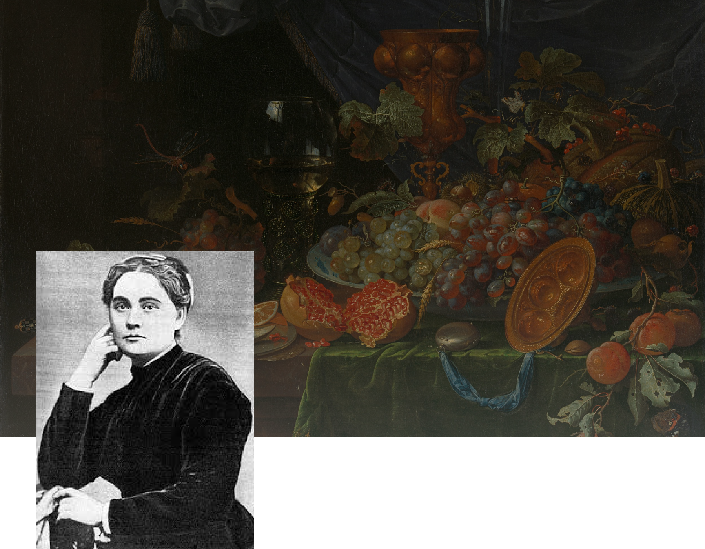
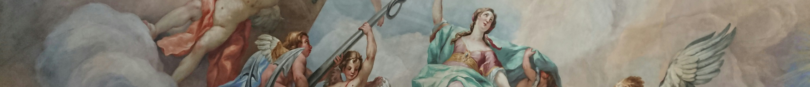
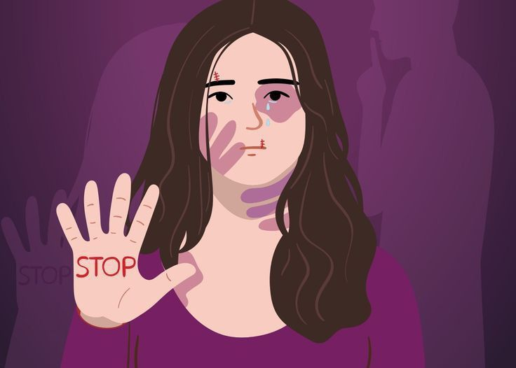

Марко
Вовчок
Одна з перших українських письменниць ,яка порушувала феміністичні теми ,адже її твори присвячені боротьбі жінок за свободу, права та гідність у патріархальному суспільстві.
Біографія

Моменти, що формують

Марко Вовчок(справжнє ім'я Марія Олександрівна Вілінська) народилася 22 грудня 1883 року бідній російській дворянській сім'ї. На формуванні поглядів позначилося тривале перебування в інтелігентних сім'ях російських родичів.
Марія Вілінська здобула освіту в домашніх умовах, володіла кількома іноземними мовами.Після раннього одруження з українським етнографом Опанасом Марковичем вона переїхала до України.
Феміністичні мотиви в її творчості проявляються через зображення життя українських жінок, їхньої залежності від чоловіків, соціальних стереотипів, економічної та правової дискримінації.
У 1851-1858
У 1859-1867
Її перша збірка оповідань написана у Немирові під назвою "Народні оповідання" (1857). Вона справила велике враження на літературно-громадську думку,відразу стала надзвичайно популярною та отримала схвальні відгуки від Тараса Шевченка, Пантелеймона Куліша та інших відомих письменників.
Марко Вовчок розробляла жанри психологічної повісті й оповідання, історичної повісті й оповідання для дітей, створила жанр соціально-побутової казки. Чоловік Марії повернувся з-за кордону сам і більше не бачився з дружиною й сином, однак надсилав ще кілька років гроші для сім'ї.

Померла Марія Вілінська на 74 році життя 28 липня 1907 року.
Марко Вовчок була однією з перших, хто піднімав питання про фемінізм в літературі, хоча в її час фемінізм не існував як окремий рух. Крім того, Вовчок у своїх творах наголошувала на важливості освіти для жінок, прагнучи показати, що жінки заслуговують на можливість розвивати свої здібності та бути незалежними.
Її творчість закладала основи для роздумів про гендерну рівність, хоча сама вона не називала себе феміністкою. Завдяки її творам в українській літературі з’явилися перші голоси на підтримку прав жінок, і тому Марко Вовчок часто асоціюють з раннім українським фемінізмом.

“Інститутка”
У повісті "Інститутка" авторка показує трагічну долю жінок-селянок, які страждають від поміщицької влади, борються за своє право на гідне життя та свободу. Її героїні часто зображені як сильні та незалежні жінки, які прагнуть змінити своє долю, протистояти несправедливості й жорстокості.
Повість починається з розповіді Устини, яка змалку виросла в кріпацтві та не знала своїх батьків, але намагається не втрачати духу. З приїздом молодої панночки настає новий етап в її житті: нова господиня, хоча й освічена, виявляється грубою і деспотичною, посилюючи тиск на кріпаків.
Устина стає жертвою постійних принижень і фізичних покарань, але в цей час знаходить любов у стосунках із Прокопом. Вони разом переживають важкі часи, однак їхнє життя кардинально змінюється, коли пан відправляє Прокопа в москалі, а Устина вирішує слідувати за ним до Києва. Хоча життя в місті виявляється нелегким, Устина відчуває радість від свободи, навіть залишившись сама та працюючи там.
Протистояння жінки-селянки та жінки-панянки. Устина, головна героїня твору, є символом терпіння, витривалості та людяності. Вона протистоїть жорстокості інститутки, яка хоч і є освіченою, однак немає моральних якостей. Таке протистояння символізує конфлікт не лише соціальний, а й між різними типами жінок: перша- відтворює жорстокі патріархальні норми,а друга жінкою мріє про свободу і краще життя.
Боротьба за свободу та самостійність. Устина, хоч і знаходиться в кріпацькому становищі, прагне здобути власну свободу, готова протистояти поміщикам, і, врешті-решт, вирішується змінити свою долю. Цей порив до незалежності демонструє внутрішню силу і непокірність, навіть в таких складних умовах.
Критика патріархальних норм. Повість засуджує подвійні стандарти й обмеження, які накладаються на жінок, незалежно від їхнього соціального становища. І кріпачка Устина, і інститутка перебувають у системі, де чоловіки визначають їхнє життя. Твір вказує на необхідність змінити суспільні уявлення про жінок і дозволити їм обирати власний шлях. Марко Вовчок, описуючи страждання і боротьбу Устини, закладає феміністичні ідеї, що закликають до рівності, справедливості і гідного ставлення до жінок.
